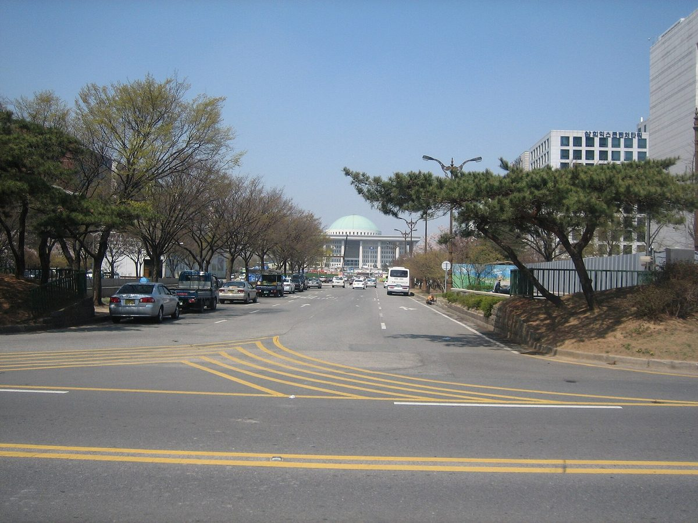

박수민 의원, 종합감사서 주민참여 태양광 일부 수익률 20~27% 사례 들며 햇빛소득마을 2,200곳 확대 때 한전 부담 질의

최재관 에너지공단 이사장은 기존 SMP·REC 제도라 별도 보조 아니라고 설명, 김성환 장관은 적정 이윤 수준으로 수렴할 것으로 내다봐…계통 조건부 승인 96% 지적도
박수민 국민의힘 의원은 26일 국회 기후에너지환경노동위원회의 기후에너지환경부 종합감사에서 일부 주민참여형 태양광 사업의 수익률이 20~27%에 이른 사례가 있다며, 햇빛소득마을을 전국으로 넓혀도 이런 수익과 한국전력의 재무가 버틸 수 있는지 물었다. 정부는 햇빛소득마을을 올해 700곳 선정하고 내년 1,500곳을 더해 누적 2,200곳으로 늘릴 계획이며, 박 의원은 최재관 한국에너지공단 이사장에게 2,200곳 규모가 되면 한전 적자를 감당할 수 있겠느냐고 따졌다. 태양광 사업자는 전력 판매와 신재생에너지 공급인증서(REC) 거래로 수입을 얻고 한전은 전력구입비와 발전사의 REC 의무이행비용을 정산하는 만큼, 사업 확대가 한전 비용에 미칠 영향을 따져 봐야 한다는 문제 제기다. 박 의원은 계통 연결 문제로 조건부 승인을 받은 비율이 96%에 이른다고도 지적했는데, 앞서 행정안전부가 발표한 2차 공모에서도 선정된 436개 마을 가운데 413곳이 부지 확보·자금 계획·계통연계 등을 보완해야 하는 조건부 선정이었다. 최 이사장은 현행 전력시장 여건에서 20% 이상의 수익이 나고 있다고 설명하면서, 전력도매가격(SMP)과 REC라는 기존 제도 안에서 하는 사업이어서 따로 보조가 들어간다고 보지는 않는다고 답했다. 김성환 기후에너지환경부 장관은 지금의 높은 수익률은 전력시장 가격이 반영된 결과로 앞으로 적정 이윤 수준으로 수렴할 것이라고 내다봤고, 풍력·태양광을 공모펀드 방식으로 해 "8%에서 10% 정도의 이윤"이 나면 참여하는 사람이 크게 늘어난다고 말했다.
시민에너지 관점
20~27%가 일부 사례의 수익률이라는 점을 감안하면, 따져야 할 것은 숫자의 높낮이보다 그 수익이 누구에게 돌아가느냐다. 영국의 공동체 에너지 단체들은 주민에게 소액 지분(커뮤니티 셰어)을 공모해 발전소를 짓고, 출자자에게 적정한 이자를 준 뒤 남는 돈을 지역 기금으로 돌리는 방식을 오래 써 왔다. 수익률이 내려가면 주민 참여가 식을 것이라는 걱정이 나올 수 있지만, 장관 말대로 8~10%에서도 참여가 늘어난다면 고수익보다 안정적인 몫과 지역 소유가 참여를 이끄는 힘이 될 수 있다. 같은 SMP·REC 수입도 외지 사업자에게 가면 지역 밖으로 빠져나가고 주민이 주인이면 마을에 남는 만큼, 정부는 사례별 수익률과 한전 비용 추계를 공개하고 조건부 선정 마을의 계통 연결 일정부터 내놓아야 한다.
출처: 데일리안 2026-10-26 정다운 원문 보기
パク・スミン議員、総合監査で住民参加型太陽光の一部収益率20～27%の事例を挙げ、太陽光所得村2,200カ所への拡大時の韓電負担を質す
チェ・ジェグァン・エネルギー公団理事長は既存のSMP・REC制度で別途の補助ではないと説明、キム・ソンファン長官は適正利潤の水準に収れんすると見通す…系統の条件付き承認96%の指摘も
国民の力のパク・スミン国会議員は26日、国会気候エネルギー環境労働委員会の気候エネルギー環境部に対する総合監査で、一部の住民参加型太陽光事業で収益率が20～27%に達した事例があるとして、太陽光所得村を全国に広げてもこうした収益と韓国電力公社（韓電）の財務が持ちこたえられるのかを質した。政府は太陽光所得村を今年700カ所選定し、来年1,500カ所を加えて累計2,200カ所に増やす計画で、パク議員はチェ・ジェグァン韓国エネルギー公団理事長に対し、2,200カ所の規模になれば韓電の赤字に耐えられるのかと問い詰めた。太陽光事業者は売電と再生可能エネルギー供給認証書（REC）の取引で収入を得て、韓電は電力購入費と発電会社のREC義務履行費用を精算するため、事業拡大が韓電の費用に及ぼす影響を検討すべきだという問題提起だ。パク議員は系統接続の問題で条件付き承認を受けた割合が96%に上るとも指摘し、先に行政安全部が発表した第2次公募でも、選ばれた436の村のうち413カ所が用地確保・資金計画・系統連系などの補完を求められる条件付き選定だった。チェ理事長は現在の電力市場の条件で20%以上の収益が出ていると説明し、卸電力価格（SMP）とRECという既存の制度の中で行う事業なので、別途の補助が入っているとは考えていないと答えた。キム・ソンファン気候エネルギー環境部長官は、現在の高い収益率は電力市場価格を反映した結果で、今後は適正利潤の水準に収れんするとの見通しを示し、風力・太陽光を公募ファンド方式で行い「8%から10%程度の利潤」が出れば参加者が大きく増えると述べた。
市民エネルギーの視点
20～27%が一部事例の収益率であることを踏まえれば、問うべきは数字の高低よりも、その収益が誰に還るのかだ。英国のコミュニティエネルギー団体は、住民に少額の出資（コミュニティシェア）を募って発電所を建て、出資者に適正な利息を払った後の残りを地域基金に回す方式を長く続けてきた。収益率が下がれば住民の参加が冷めるという懸念も出るだろうが、長官の言う通り8～10%でも参加が増えるのなら、高収益よりも安定した取り分と地域所有こそが参加を引き出す力になり得る。同じSMP・REC収入でも域外の事業者に渡れば地域の外へ流れ出し、住民が持ち主なら村に残るのだから、政府は事例別の収益率と韓電の費用推計を公開し、条件付きで選ばれた村の系統接続の日程から示すべきだ。
出典: デイリーアン（Dailian） 2026-10-26 チョン・ダウン 原文を読む
韩国议员Park Su-min在综合监察中举出部分居民参与型光伏收益率达20～27%的案例，质询阳光收入村扩大到2,200处时韩电的负担
能源公团理事长Choi Jae-kwan解释称属既有SMP与REC制度、并非额外补贴，部长Kim Sung-hwan预计将收敛至合理利润水平…另有电网附条件批准达96%的指摘
韩国国民力量党国会议员Park Su-min 26日在国会气候能源环境劳动委员会对气候能源环境部的综合监察中表示，部分居民参与型光伏项目出现了收益率达到20～27%的案例，并质询阳光收入村推广到全国后，这样的收益和韩国电力公社（韩电）的财务能否维持。政府计划今年评选700处阳光收入村，明年再增加1,500处，累计达到2,200处；Park议员追问韩国能源公团理事长Choi Jae-kwan，规模达到2,200处时韩电能否承受亏损。光伏业者通过售电和可再生能源供应证书（REC）交易获得收入，而韩电要结算购电费用和发电企业的REC义务履行费用，因此有必要评估项目扩大对韩电成本的影响，这是质询的要点。Park议员还指出，因电网接入问题获得附条件批准的比例高达96%；此前行政安全部公布的第二轮评选结果中，入选的436个村庄里也有413个属于附条件入选，需要补充用地、资金计划和并网等要件。Choi理事长解释说，在现行电力市场条件下收益率在20%以上，并回答称，这是在系统边际电价（SMP）和REC等既有制度内进行的项目，不认为另有补贴。气候能源环境部部长Kim Sung-hwan预计，目前的高收益率反映了电力市场价格，今后将收敛到合理利润水平，并表示如果以公募基金方式开发风电和光伏，“利润在8%到10%左右”时参与的人就会大幅增加。
市民能源视角
考虑到20～27%只是部分案例的收益率，真正要追问的不是数字高低，而是这些收益归谁所有。英国的社区能源组织长期采用向居民募集小额股份（社区股份）建设电站、向出资者支付合理利息后把余款投入地方基金的做法。有人可能担心收益率下降后居民参与会降温，但如果像部长所说8～10%也能吸引更多人参与，那么比起高收益，稳定的份额和地方所有更能推动参与。同样的SMP和REC收入，落入外地业者手中就会流出地方，由居民当家就会留在村里；政府应公开各案例的收益率和韩电成本推算，并首先拿出附条件入选村庄的并网时间表。
来源: Dailian 2026-10-26 Jeong Da-un 查看原文
Lawmaker Park Su-min cites some resident-participation solar projects earning 20-27% returns and asks at the parliamentary audit whether KEPCO can bear an expansion to 2,200 Sunlight Income Villages
Korea Energy Agency head Choi Jae-kwan says projects run on the existing SMP and REC system without extra subsidy; Minister Kim Sung-hwan expects returns to settle at a reasonable profit level; 96% conditional grid approvals also raised
Park Su-min, a People Power Party lawmaker, said at the National Assembly Climate, Energy, Environment and Labour Committee's comprehensive audit of the Ministry of Climate, Energy and Environment on the 26th that some resident-participation solar projects had recorded returns of 20-27%, and asked whether such returns, and the finances of Korea Electric Power Corporation (KEPCO), could hold up if Sunlight Income Villages were rolled out nationwide. The government plans to select 700 Sunlight Income Villages this year and add 1,500 next year for a cumulative 2,200, and Park pressed Korea Energy Agency head Choi Jae-kwan on whether KEPCO's deficit could withstand a programme of that size. Solar operators earn money from power sales and trading renewable energy certificates (RECs), while KEPCO settles power purchase costs and generators' REC obligation costs, so the point of the question was that the effect of expansion on KEPCO's costs needs to be examined. Park also noted that 96% of approvals had been conditional because of grid connection problems; in the second round of selections announced earlier by the Ministry of the Interior and Safety, 413 of the 436 villages chosen were selected on condition that they make up for shortfalls such as securing sites, financing plans or grid connection. Choi explained that projects are currently earning returns of more than 20% under present power market conditions, and said that because they operate within the existing system of the system marginal price (SMP) and RECs, he does not see them as receiving a separate subsidy. Climate Minister Kim Sung-hwan said today's high returns reflect power market prices and are expected to converge on a reasonable profit level, adding that if wind and solar were run as public offering funds, "a profit of around 8% to 10%" would bring a large increase in participants.
Citizen Energy View
Since 20-27% is the return of only some projects, the question that matters is less how high the figure is than who receives the money. Community energy groups in the UK have long built generators by offering residents small stakes through community share offers, paying investors a fair rate of interest and channelling what remains into a local fund. Some may worry that falling returns will cool residents' interest, but if, as the minister says, 8-10% is enough to draw more people in, a stable share and local ownership may do more to drive participation than high returns. The same SMP and REC income leaves the region when it goes to outside developers and stays in the village when residents are the owners, so the government should publish project-by-project returns and its estimates of KEPCO's costs, and start by setting out a grid connection timetable for the villages selected on condition.
Source: Dailian 2026-10-26 Jeong Da-un Read the original